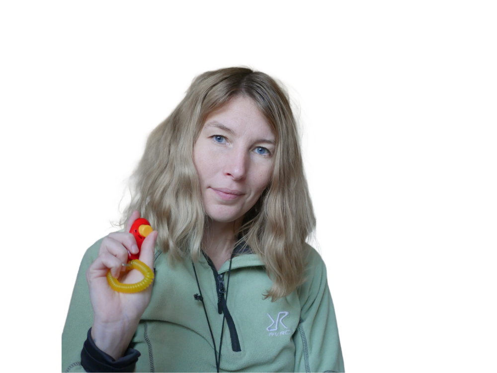

Om mig

Halloj, jag heter Jannike!
Arbetat med hundträning och rehab av hundar i många år, byter nu bana helt och pluggar webbutveckling
Även om jag arbetat med bilder dagligen tidigare för sociala medier, hemsida m.m. så var det i alla fall 10 år sedan man satt och lekte runt i photoshop och redigerade bilder, så tog någon timme för att komma in i det igen.